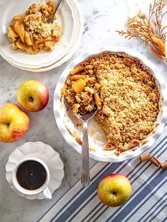

Apple Crumble
This dessert is pure cozy satisfaction. Tender baked apples melt into a cinnamon-warm filling, topped with a golden, buttery crisp crumble (without the dairy). It's sweet but not too sweet, nostalgic but not old-fashioned and it delivers that classic contrast we all secretly crave - soft fruit underneath, crunchy topping on top. It tastes like home, like autumn, like hugging someone you love after being outside in cold air.
Total Time: 1 hour 20 minutes
Yield: 6 servings x1
INGREDIENTS
RECIPE SCALE :
INSTRUCTIONS
- Preheat oven to 180°C (350°F).
- Toss apples with lemon juice, sugar, and cinnamon. Spread in baking dish.
- Mix oats, flour, sugar, and salt. Rub in vegan butter until crumbly.
- Sprinkle crumble topping over apples.
- Bake for 40-45 minutes until golden and bubbling.
- Serve warm with vegan ice cream or custard.